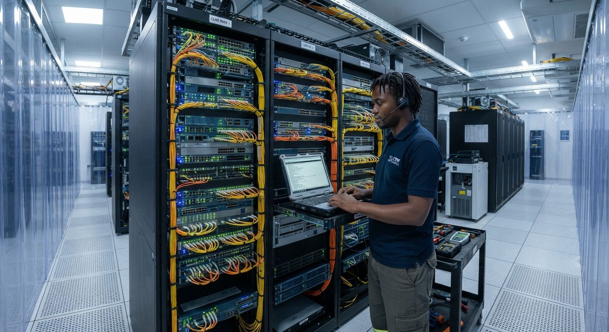

Safety first
We plan responsibly for people, equipment and the environments in which we work.
About Seni
We bring the people, technology and field experience together to keep modern operations connected, secure and ready for what is next.
Who we are
Seni Integrated Systems is an IT and telecoms engineering company serving businesses and industrial operations across Nigeria. We design, supply, install and support systems that work in offices, remote sites, offshore assets and demanding outdoor environments.
Our work covers connectivity, communications, networking, control systems and end-user technology. We focus on practical solutions, careful installation and clear support long after handover.

Our promise
What guides us
We plan responsibly for people, equipment and the environments in which we work.
We make complex infrastructure understandable, measurable and maintainable.
We stay available to help your systems perform beyond installation day.